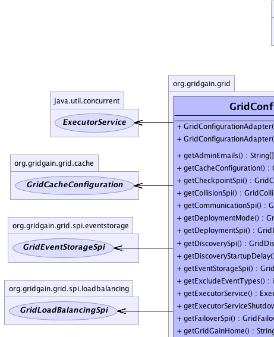
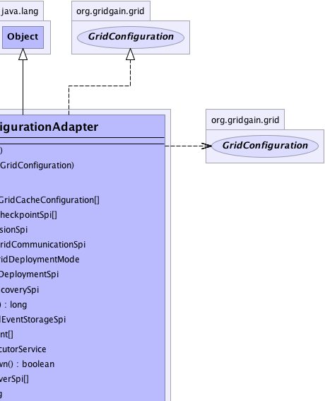
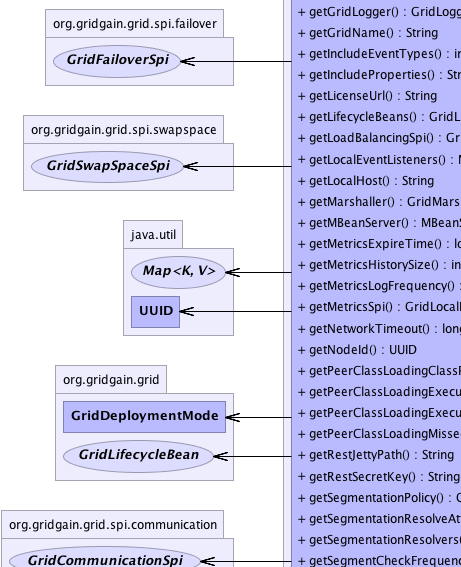
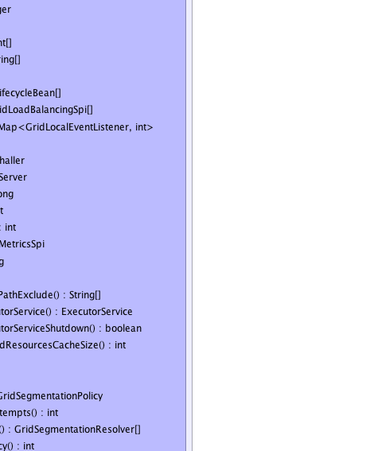
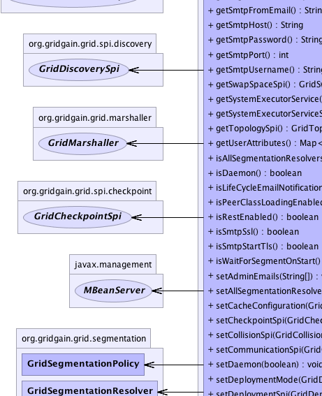
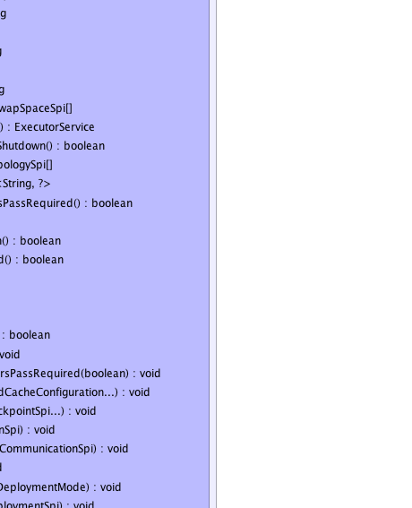
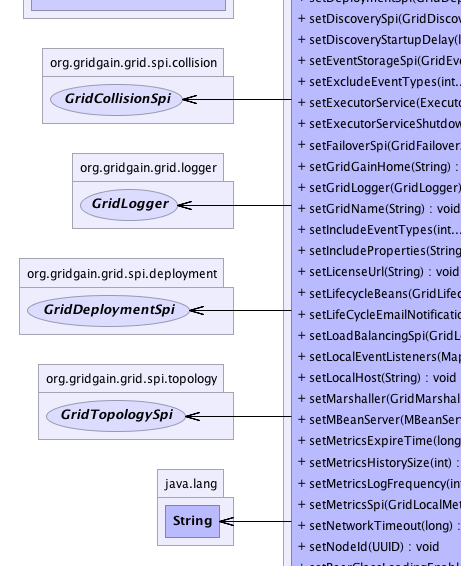
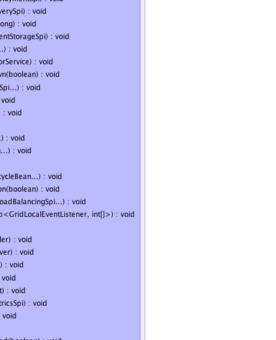
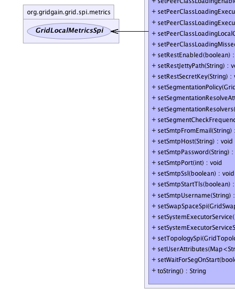
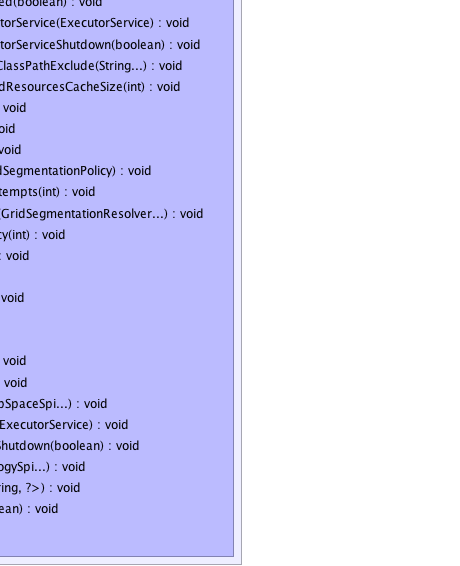

org.gridgain.grid.GridConfigurationAdapter
org.gridgain.grid.GridConfigurationAdapter
|
GridGain™ 3.6.0c
Community Edition |
|||||||||
| PREV CLASS NEXT CLASS | FRAMES NO FRAMES | |||||||||
| SUMMARY: NESTED | FIELD | CONSTR | METHOD | DETAIL: FIELD | CONSTR | METHOD | |||||||||
java.lang.Object
public class GridConfigurationAdapter
Adapter for GridConfiguration interface. Use it to add custom configuration
for grid. Note that you should only set values that differ from defaults, as grid
will automatically pick default values for all values that are not set.
| Wiki | |
| Forum |
|  |  |
|  |  |
|  |  |
|  |  |
|  |  |
| Field Summary |
|---|
| Constructor Summary | |
|---|---|
GridConfigurationAdapter()
Creates valid grid configuration with all default values. |
|
GridConfigurationAdapter(GridConfiguration cfg)
Creates grid configuration by coping all configuration properties from given configuration. |
|
| Method Summary | |
|---|---|
String[] |
getAdminEmails()
Gets optional set of admin emails where email notifications will be set. |
GridCacheConfiguration[] |
getCacheConfiguration()
Gets configuration (descriptors) for all caches. |
GridCheckpointSpi[] |
getCheckpointSpi()
Should return fully configured checkpoint SPI implementation. |
GridCollisionSpi |
getCollisionSpi()
Should return fully configured collision SPI implementation. |
GridCommunicationSpi |
getCommunicationSpi()
Should return fully configured SPI communication implementation. |
GridDeploymentMode |
getDeploymentMode()
Gets deployment mode for deploying tasks and other classes on this node. |
GridDeploymentSpi |
getDeploymentSpi()
Should return fully configured deployment SPI implementation. |
GridDiscoverySpi |
getDiscoverySpi()
Should return fully configured discovery SPI implementation. |
long |
getDiscoveryStartupDelay()
This value is used to expire messages from waiting list whenever node discovery discrepancies happen. |
GridEventStorageSpi |
getEventStorageSpi()
Should return fully configured event SPI implementation. |
int[] |
getExcludeEventTypes()
Gets array of event types, which will not be recorded. |
ExecutorService |
getExecutorService()
Should return an instance of fully configured thread pool to be used in grid. |
boolean |
getExecutorServiceShutdown()
Shutdown flag for executor service. |
GridFailoverSpi[] |
getFailoverSpi()
Should return fully configured failover SPI implementation. |
String |
getGridGainHome()
Should return GridGain installation home folder. |
GridLogger |
getGridLogger()
Should return an instance of logger to use in grid. |
String |
getGridName()
Gets optional grid name. |
int[] |
getIncludeEventTypes()
Gets array of event types, which will be recorded. |
String[] |
getIncludeProperties()
Gets array of system or environment properties to include into node attributes. |
String |
getLicenseUrl()
Gets custom license file URL to be used instead of default license file location. |
GridLifecycleBean[] |
getLifecycleBeans()
Returns a collection of life-cycle beans. |
GridLoadBalancingSpi[] |
getLoadBalancingSpi()
Should return fully configured load balancing SPI implementation. |
Map<GridLocalEventListener,int[]> |
getLocalEventListeners()
Gets map of pre-configured local event listeners. |
String |
getLocalHost()
Gets system-wide local address or host for all GridGain components to bind to. |
GridMarshaller |
getMarshaller()
Should return an instance of marshaller to use in grid. |
MBeanServer |
getMBeanServer()
Should return MBean server instance. |
long |
getMetricsExpireTime()
Elapsed time in milliseconds after which node metrics are considered expired. |
int |
getMetricsHistorySize()
Number of node metrics to keep in memory to calculate totals and averages. |
int |
getMetricsLogFrequency()
Gets frequency of metrics log print out. |
GridLocalMetricsSpi |
getMetricsSpi()
Should return fully configured metrics SPI implementation. |
long |
getNetworkTimeout()
Maximum timeout in milliseconds for network requests. |
UUID |
getNodeId()
Unique identifier for this node within grid. |
String[] |
getPeerClassLoadingClassPathExclude()
Should return list of packages from the system classpath that need to be peer-to-peer loaded from task originating node. '*' is supported at the end of the package name which means that all sub-packages and their classes are included like in Java package import clause. |
ExecutorService |
getPeerClassLoadingExecutorService()
Should return an instance of fully configured executor service which is in charge of peer class loading requests/responses. |
boolean |
getPeerClassLoadingExecutorServiceShutdown()
Should return flag of peer class loading executor service shutdown when the grid stops. |
int |
getPeerClassLoadingMissedResourcesCacheSize()
Returns missed resources cache size. |
String |
getRestJettyPath()
Gets path, either absolute or relative to GRIDGAIN_HOME, to Jetty
XML configuration file. |
String |
getRestSecretKey()
Gets secret key to authenticate REST requests. |
org.gridgain.grid.segmentation.GridSegmentationPolicy |
getSegmentationPolicy()
Returns segmentation policy. |
int |
getSegmentationResolveAttempts()
Gets segmentation resolve attempts. |
org.gridgain.grid.segmentation.GridSegmentationResolver[] |
getSegmentationResolvers()
Returns a collection of segmentation resolvers. |
int |
getSegmentCheckFrequency()
Returns frequency of network segment check by discovery manager. |
String |
getSmtpFromEmail()
Gets optional FROM email address for email notifications. |
String |
getSmtpHost()
Gets SMTP host name or null if SMTP is not configured. |
String |
getSmtpPassword()
SMTP password or null if not used. |
int |
getSmtpPort()
Gets SMTP port. |
String |
getSmtpUsername()
Gets SMTP username or null if not used. |
GridSwapSpaceSpi[] |
getSwapSpaceSpi()
Should return fully configured swap space SPI implementations. |
ExecutorService |
getSystemExecutorService()
Executor service that is in charge of processing GridTaskSession messages
and job responses. |
boolean |
getSystemExecutorServiceShutdown()
Shutdown flag for system executor service. |
GridTopologySpi[] |
getTopologySpi()
Should return fully configured topology SPI implementation. |
Map<String,?> |
getUserAttributes()
Should return any user-defined attributes to be added to this node. |
boolean |
isAllSegmentationResolversPassRequired()
Gets all segmentation resolvers pass required flag. |
boolean |
isDaemon()
Whether or not this node should be a daemon node. |
boolean |
isLifeCycleEmailNotification()
Whether or not send email notifications on node start and stop. |
boolean |
isPeerClassLoadingEnabled()
Returns true if peer class loading is enabled, false
otherwise. |
boolean |
isRestEnabled()
Gets flag indicating whether external REST access is enabled or not. |
boolean |
isSmtpSsl()
Whether or not to use SSL fot SMTP. |
boolean |
isSmtpStartTls()
Whether or not to use STARTTLS fot SMTP. |
boolean |
isWaitForSegmentOnStart()
Gets wait for segment on startup flag. |
void |
setAdminEmails(String[] adminEmails)
Sets optional set of admin emails where email notifications will be set. |
void |
setAllSegmentationResolversPassRequired(boolean allResolversPassReq)
Sets all segmentation resolvers pass required flag. |
void |
setCacheConfiguration(GridCacheConfiguration... cacheCfg)
Sets cache configurations. |
void |
setCheckpointSpi(GridCheckpointSpi... cpSpi)
Sets fully configured instance of GridCheckpointSpi. |
void |
setCollisionSpi(GridCollisionSpi colSpi)
Sets fully configured instance of GridCollisionSpi. |
void |
setCommunicationSpi(GridCommunicationSpi commSpi)
Sets fully configured instance of GridCommunicationSpi. |
void |
setDaemon(boolean daemon)
Sets daemon flag. |
void |
setDeploymentMode(GridDeploymentMode deployMode)
Sets task classes and resources sharing mode. |
void |
setDeploymentSpi(GridDeploymentSpi deploySpi)
Sets fully configured instance of GridDeploymentSpi. |
void |
setDiscoverySpi(GridDiscoverySpi discoSpi)
Sets fully configured instance of GridDiscoverySpi. |
void |
setDiscoveryStartupDelay(long discoStartupDelay)
Sets time in milliseconds after which a certain metric value is considered expired. |
void |
setEventStorageSpi(GridEventStorageSpi evtSpi)
Sets fully configured instance of GridEventStorageSpi. |
void |
setExcludeEventTypes(int... exclEvtTypes)
Sets array of event types, which will not be recorded by GridEventStorageManager.record(GridEvent). |
void |
setExecutorService(ExecutorService execSvc)
Sets thread pool to use within grid. |
void |
setExecutorServiceShutdown(boolean execSvcShutdown)
Sets executor service shutdown flag. |
void |
setFailoverSpi(GridFailoverSpi... failSpi)
Sets fully configured instance of GridFailoverSpi. |
void |
setGridGainHome(String ggHome)
Sets GridGain installation folder. |
void |
setGridLogger(GridLogger log)
Sets logger to use within grid. |
void |
setGridName(String gridName)
Sets grid name. |
void |
setIncludeEventTypes(int... inclEvtTypes)
Sets array of event types, which will be recorded by GridEventStorageManager.record(GridEvent). |
void |
setIncludeProperties(String... includeProps)
Sets array of system or environment property names to include into node attributes. |
void |
setLicenseUrl(String licUrl)
Sets license URL different from the default location of the license file. |
void |
setLifecycleBeans(GridLifecycleBean... lifecycleBeans)
Sets a collection of lifecycle beans. |
void |
setLifeCycleEmailNotification(boolean lifeCycleEmailNtf)
Sets whether or not to enable lifecycle email notifications. |
void |
setLoadBalancingSpi(GridLoadBalancingSpi... loadBalancingSpi)
Sets fully configured instance of GridLoadBalancingSpi. |
void |
setLocalEventListeners(Map<GridLocalEventListener,int[]> lsnrs)
Sets map of pre-configured local event listeners. |
void |
setLocalHost(String locHost)
Sets system-wide local address or host for all GridGain components to bind to. |
void |
setMarshaller(GridMarshaller marsh)
Sets marshaller to use within grid. |
void |
setMBeanServer(MBeanServer mbeanSrv)
Sets initialized and started MBean server. |
void |
setMetricsExpireTime(long metricsExpTime)
Sets time in milliseconds after which a certain metric value is considered expired. |
void |
setMetricsHistorySize(int metricsHistSize)
Sets number of metrics kept in history to compute totals and averages. |
void |
setMetricsLogFrequency(int metricsLogFreq)
Sets frequency of metrics log print out. |
void |
setMetricsSpi(GridLocalMetricsSpi metricsSpi)
Sets fully configured instance of GridLocalMetricsSpi. |
void |
setNetworkTimeout(long netTimeout)
Maximum timeout in milliseconds for network requests. |
void |
setNodeId(UUID nodeId)
Sets unique identifier for local node. |
void |
setPeerClassLoadingEnabled(boolean p2pEnabled)
Enables/disables peer class loading. |
void |
setPeerClassLoadingExecutorService(ExecutorService p2pSvc)
Sets thread pool to use for peer class loading. |
void |
setPeerClassLoadingExecutorServiceShutdown(boolean p2pSvcShutdown)
Sets peer class loading executor service shutdown flag. |
void |
setPeerClassLoadingLocalClassPathExclude(String... p2pLocalClsPathExcl)
Sets list of packages in a system class path that should be to P2P loaded even if they exist locally. |
void |
setPeerClassLoadingMissedResourcesCacheSize(int p2pMissedCacheSize)
Sets size of missed resources cache. |
void |
setRestEnabled(boolean restEnabled)
Sets flag indicating whether external REST access is enabled or not. |
void |
setRestJettyPath(String jettyPath)
Sets path, either absolute or relative to GRIDGAIN_HOME, to JETTY
XML configuration file. |
void |
setRestSecretKey(String restSecretKey)
Sets secret key to authenticate REST requests. |
void |
setSegmentationPolicy(org.gridgain.grid.segmentation.GridSegmentationPolicy segPlc)
Sets segmentation policy. |
void |
setSegmentationResolveAttempts(int segResolveAttempts)
Sets segmentation resolve attempts count. |
void |
setSegmentationResolvers(org.gridgain.grid.segmentation.GridSegmentationResolver... segResolvers)
Sets segmentation resolvers. |
void |
setSegmentCheckFrequency(int segChkFreq)
Sets network segment check frequency. |
void |
setSmtpFromEmail(String smtpFromEmail)
Sets optional FROM email address for email notifications. |
void |
setSmtpHost(String smtpHost)
Sets SMTP host. |
void |
setSmtpPassword(String smtpPwd)
Sets SMTP password or null if not used. |
void |
setSmtpPort(int smtpPort)
Sets SMTP port. |
void |
setSmtpSsl(boolean smtpSsl)
Sets whether or not SMTP uses SSL. |
void |
setSmtpStartTls(boolean smtpStartTls)
Sets whether or not SMTP uses STARTTLS. |
void |
setSmtpUsername(String smtpUsername)
Sets SMTP username or null if not used. |
void |
setSwapSpaceSpi(GridSwapSpaceSpi... swapSpaceSpi)
Sets fully configured instances of GridSwapSpaceSpi. |
void |
setSystemExecutorService(ExecutorService systemSvc)
Sets system thread pool to use within grid. |
void |
setSystemExecutorServiceShutdown(boolean sysSvcShutdown)
Sets system executor service shutdown flag. |
void |
setTopologySpi(GridTopologySpi... topSpi)
Sets fully configured instance of GridTopologySpi. |
void |
setUserAttributes(Map<String,?> userAttrs)
Sets user attributes for this node. |
void |
setWaitForSegOnStart(boolean waitForSegOnStart)
Sets wait for segment on start flag. |
String |
toString()
|
| Methods inherited from class java.lang.Object |
|---|
clone, equals, finalize, getClass, hashCode, notify, notifyAll, wait, wait, wait |
| Constructor Detail |
|---|
public GridConfigurationAdapter()
public GridConfigurationAdapter(GridConfiguration cfg)
cfg - Grid configuration to copy from.| Method Detail |
|---|
public boolean isLifeCycleEmailNotification()
By default - email notifications are enabled.
Note that life cycle notification is only available in Enterprise Edition. In Community Edition this property is ignored.
isLifeCycleEmailNotification in interface GridConfigurationTrue to enable lifecycle email notifications.GridConfiguration.getSmtpHost(),
GridConfiguration.getAdminEmails()public String getLicenseUrl()
getLicenseUrl in interface GridConfigurationnull to use the default
$GRIDGAIN_HOME-related location.public boolean isSmtpSsl()
GridConfiguration.DFLT_SMTP_SSL.
Note that GridGain uses SMTP to send emails in critical situations such as license expiration or fatal system errors. It is highly recommended to configure SMTP in production environment.
Note that GridConfiguration.getSmtpHost() is the only mandatory SMTP
configuration property.
isSmtpSsl in interface GridConfigurationGridConfiguration.DFLT_SMTP_SSL,
GridSystemProperties.GG_SMTP_SSLpublic boolean isSmtpStartTls()
GridConfiguration.DFLT_SMTP_STARTTLS.
Note that GridGain uses SMTP to send emails in critical situations such as license expiration or fatal system errors. It is highly recommended to configure SMTP in production environment.
Note that GridConfiguration.getSmtpHost() is the only mandatory SMTP
configuration property.
isSmtpStartTls in interface GridConfigurationGridConfiguration.DFLT_SMTP_STARTTLS,
GridSystemProperties.GG_SMTP_STARTTLSpublic String getSmtpHost()
null if SMTP is not configured.
Note that GridGain uses SMTP to send emails in critical situations such as license expiration or fatal system errors. It is highly recommended to configure SMTP in production environment.
Note that getSmtpHost() is the only mandatory SMTP
configuration property.
getSmtpHost in interface GridConfigurationnull if SMTP is not configured.GridSystemProperties.GG_SMTP_HOSTpublic int getSmtpPort()
GridConfiguration.DFLT_SMTP_PORT.
Note that GridGain uses SMTP to send emails in critical situations such as license expiration or fatal system errors. It is highly recommended to configure SMTP in production environment.
Note that GridConfiguration.getSmtpHost() is the only mandatory SMTP
configuration property.
getSmtpPort in interface GridConfigurationGridConfiguration.DFLT_SMTP_PORT,
GridSystemProperties.GG_SMTP_PORTpublic String getSmtpUsername()
null if not used.
Note that GridGain uses SMTP to send emails in critical situations such as license expiration or fatal system errors. It is highly recommended to configure SMTP in production environment.
Note that GridConfiguration.getSmtpHost() is the only mandatory SMTP
configuration property.
getSmtpUsername in interface GridConfigurationnull.GridSystemProperties.GG_SMTP_USERNAMEpublic String getSmtpPassword()
null if not used.
Note that GridGain uses SMTP to send emails in critical situations such as license expiration or fatal system errors. It is highly recommended to configure SMTP in production environment.
Note that GridConfiguration.getSmtpHost() is the only mandatory SMTP
configuration property.
getSmtpPassword in interface GridConfigurationnull.GridSystemProperties.GG_SMTP_PWDpublic String[] getAdminEmails()
Note that GridGain uses SMTP to send emails in critical situations such as license expiration or fatal system errors. It is highly recommended to configure SMTP in production environment.
getAdminEmails in interface GridConfigurationnull - emails will be sent only to the email in the license
if one provided.GridSystemProperties.GG_ADMIN_EMAILSpublic String getSmtpFromEmail()
GridConfiguration.DFLT_SMTP_FROM_EMAIL will be used.
getSmtpFromEmail in interface GridConfigurationnull
- GridConfiguration.DFLT_SMTP_FROM_EMAIL will be used by default.GridConfiguration.DFLT_SMTP_FROM_EMAIL,
GridSystemProperties.GG_SMTP_FROMpublic void setLicenseUrl(String licUrl)
licUrl - License URl to set.@GridEnterpriseFeature public void setLifeCycleEmailNotification(boolean lifeCycleEmailNtf)
Note that life cycle notification is only available in Enterprise Edition. In Community Edition this property is ignored.
lifeCycleEmailNtf - True to enable lifecycle email notifications.GridSystemProperties.GG_LIFECYCLE_EMAIL_NOTIFYpublic void setSmtpSsl(boolean smtpSsl)
Note that GridGain uses SMTP to send emails in critical situations such as license expiration or fatal system errors. It is highly recommended to configure SMTP in production environment.
Note that GridConfigurationAdapter.setSmtpHost(String) is the only mandatory SMTP
configuration property.
smtpSsl - Whether or not SMTP uses SSL.GridSystemProperties.GG_SMTP_SSLpublic void setSmtpStartTls(boolean smtpStartTls)
Note that GridGain uses SMTP to send emails in critical situations such as license expiration or fatal system errors. It is highly recommended to configure SMTP in production environment.
Note that GridConfigurationAdapter.setSmtpHost(String) is the only mandatory SMTP
configuration property.
smtpStartTls - Whether or not SMTP uses STARTTLS.GridSystemProperties.GG_SMTP_STARTTLSpublic void setSmtpHost(String smtpHost)
Note that GridGain uses SMTP to send emails in critical situations such as license expiration or fatal system errors. It is highly recommended to configure SMTP in production environment.
Note that #setSmtpHost(String) is the only mandatory SMTP
configuration property.
smtpHost - SMTP host to set or null to disable sending emails.GridSystemProperties.GG_SMTP_HOSTpublic void setSmtpPort(int smtpPort)
GridConfiguration.DFLT_SMTP_PORT.
Note that GridGain uses SMTP to send emails in critical situations such as license expiration or fatal system errors. It is highly recommended to configure SMTP in production environment.
Note that GridConfigurationAdapter.setSmtpHost(String) is the only mandatory SMTP
configuration property.
smtpPort - SMTP port to set.GridConfiguration.DFLT_SMTP_PORT,
GridSystemProperties.GG_SMTP_PORTpublic void setSmtpUsername(String smtpUsername)
null if not used.
Note that GridGain uses SMTP to send emails in critical situations such as license expiration or fatal system errors. It is highly recommended to configure SMTP in production environment.
Note that GridConfigurationAdapter.setSmtpHost(String) is the only mandatory SMTP
configuration property.
smtpUsername - SMTP username or null.GridSystemProperties.GG_SMTP_USERNAMEpublic void setSmtpPassword(String smtpPwd)
null if not used.
Note that GridGain uses SMTP to send emails in critical situations such as license expiration or fatal system errors. It is highly recommended to configure SMTP in production environment.
Note that GridConfigurationAdapter.setSmtpHost(String) is the only mandatory SMTP
configuration property.
smtpPwd - SMTP password or null.GridSystemProperties.GG_SMTP_PWDpublic void setAdminEmails(String[] adminEmails)
Note that GridGain uses SMTP to send emails in critical situations such as license expiration or fatal system errors. It is highly recommended to configure SMTP in production environment.
adminEmails - Optional set of admin emails where email notifications will be set.
If null - emails will be sent only to the email in the license
if one provided.GridSystemProperties.GG_ADMIN_EMAILSpublic void setSmtpFromEmail(String smtpFromEmail)
GridConfiguration.DFLT_SMTP_FROM_EMAIL will be used.
smtpFromEmail - Optional FROM email address for email notifications. If null
- GridConfiguration.DFLT_SMTP_FROM_EMAIL will be used by default.GridConfiguration.DFLT_SMTP_FROM_EMAIL,
GridSystemProperties.GG_SMTP_FROMpublic String getGridName()
null if non-default grid name was not
provided.
getGridName in interface GridConfigurationnull, which is default grid name, if
non-default grid name was not provided.public boolean isDaemon()
Daemon nodes are the usual grid nodes that participate in topology but not
visible on the main APIs, i.e. they are not part of any projections. The only
way to see daemon nodes is to use GridProjection.daemonNodes(GridPredicate[]) method.
Daemon nodes are used primarily for management and monitoring functionality that is build on GridGain and needs to participate in the topology but also needs to be excluded from "normal" topology so that it won't participate in task execution or data grid storage.
isDaemon in interface GridConfigurationTrue if this node should be a daemon node, false otherwise.GridProjection.daemonNodes(GridPredicate[])public void setDaemon(boolean daemon)
Daemon nodes are the usual grid nodes that participate in topology but not
visible on the main APIs, i.e. they are not part of any projections. The only
way to see daemon nodes is to use GridProjection.daemonNodes(GridPredicate[]) method.
Daemon nodes are used primarily for management and monitoring functionality that is build on GridGain and needs to participate in the topology but also needs to be excluded from "normal" topology so that it won't participate in task execution or data grid storage.
daemon - Daemon flag.public void setGridName(String gridName)
null is a default grid name.
gridName - Grid name to set. Can be null, which is default
grid name.public Map<String,?> getUserAttributes()
GridNode.attribute(String) or
GridNode.attributes() methods.
Note that system adds the following (among others) attributes automatically:
{@link System#getProperties()} - All system properties.{@link System#getenv(String)} - All environment properties.Note that grid will add all System properties and environment properties to grid node attributes also. SPIs may also add node attributes that are used for SPI implementation.
NOTE: attributes names starting with org.gridgain are reserved
for internal use.
getUserAttributes in interface GridConfigurationpublic void setUserAttributes(Map<String,?> userAttrs)
userAttrs - User attributes for this node.GridConfiguration.getUserAttributes()public GridLogger getGridLogger()
GridFactory for information on default configuration.
getGridLogger in interface GridConfigurationpublic void setGridLogger(GridLogger log)
log - Logger to use within grid.GridConfiguration.getGridLogger()public ExecutorService getExecutorService()
GridTasks
and GridJobs.
If not provided, default value will be used. See GridFactory for
information on default configuration.
getExecutorService in interface GridConfigurationpublic ExecutorService getSystemExecutorService()
GridTaskSession messages
and job responses.
If not provided, default value will be used. See GridFactory for
information on default configuration.
getSystemExecutorService in interface GridConfigurationpublic ExecutorService getPeerClassLoadingExecutorService()
1.
If not provided, default value will be used. See GridFactory for
information on default configuration.
getPeerClassLoadingExecutorService in interface GridConfigurationpublic boolean getExecutorServiceShutdown()
If not provided, default value true will be used which will shutdown
executor service when GridGain stops regardless of whether it was started before
GridGain or by GridGain.
getExecutorServiceShutdown in interface GridConfigurationpublic boolean getSystemExecutorServiceShutdown()
If not provided, default value true will be used which will shutdown
executor service when GridGain stops regardless of whether it was started before
GridGain or by GridGain.
getSystemExecutorServiceShutdown in interface GridConfigurationpublic boolean getPeerClassLoadingExecutorServiceShutdown()
If not provided, default value true will be used which means
that when grid will be stopped it will shut down peer class loading executor service.
getPeerClassLoadingExecutorServiceShutdown in interface GridConfigurationpublic void setExecutorService(ExecutorService execSvc)
execSvc - Thread pool to use within grid.GridConfiguration.getExecutorService()public void setExecutorServiceShutdown(boolean execSvcShutdown)
execSvcShutdown - Executor service shutdown flag.GridConfiguration.getExecutorServiceShutdown()public void setSystemExecutorService(ExecutorService systemSvc)
systemSvc - Thread pool to use within grid.GridConfiguration.getSystemExecutorService()public void setSystemExecutorServiceShutdown(boolean sysSvcShutdown)
sysSvcShutdown - System executor service shutdown flag.GridConfiguration.getSystemExecutorServiceShutdown()public void setPeerClassLoadingExecutorService(ExecutorService p2pSvc)
p2pSvc - Thread pool to use within grid.GridConfiguration.getPeerClassLoadingExecutorService()public void setPeerClassLoadingExecutorServiceShutdown(boolean p2pSvcShutdown)
p2pSvcShutdown - Peer class loading executor service shutdown flag.GridConfiguration.getPeerClassLoadingExecutorServiceShutdown()public String getGridGainHome()
GRIDGAIN_HOME system property and environment variable in that order. If
GRIDGAIN_HOME still could not be obtained, then grid will not start and exception
will be thrown.
getGridGainHome in interface GridConfigurationnull to make the system attempt to
infer it automatically.GridSystemProperties.GG_HOMEpublic void setGridGainHome(String ggHome)
ggHome - GridGain installation folder.GridConfiguration.getGridGainHome(),
GridSystemProperties.GG_HOMEpublic MBeanServer getMBeanServer()
getMBeanServer in interface GridConfigurationnull to make the system create a default one.ManagementFactory.getPlatformMBeanServer()public void setMBeanServer(MBeanServer mbeanSrv)
mbeanSrv - Initialized and started MBean server.public UUID getNodeId()
GridFactory for information on default configuration.
getNodeId in interface GridConfiguration
public void setNodeId(@Nullable
UUID nodeId)
nodeId - Unique identifier for local node.GridConfiguration.getNodeId()public GridMarshaller getMarshaller()
GridFactory for information on default configuration.
getMarshaller in interface GridConfigurationpublic void setMarshaller(GridMarshaller marsh)
marsh - Marshaller to use within grid.GridConfiguration.getMarshaller()public boolean isPeerClassLoadingEnabled()
true if peer class loading is enabled, false
otherwise. Default value is true specified by GridConfiguration.DFLT_P2P_ENABLED.
When peer class loading is enabled and task is not deployed on local node, local node will try to load classes from the node that initiated task execution. This way, a task can be physically deployed only on one node and then internally penetrate to all other nodes.
See GridTask documentation for more information about task deployment.
isPeerClassLoadingEnabled in interface GridConfigurationtrue if peer class loading is enabled, false
otherwise.public void setPeerClassLoadingEnabled(boolean p2pEnabled)
p2pEnabled - true if peer class loading is
enabled, false otherwise.public String[] getPeerClassLoadingClassPathExclude()
getPeerClassLoadingClassPathExclude in interface GridConfigurationpublic void setPeerClassLoadingLocalClassPathExclude(String... p2pLocalClsPathExcl)
p2pLocalClsPathExcl - List of P2P loaded packages. Package
name supports '*' at the end like in package import clause.public int getMetricsHistorySize()
0), then default value
GridConfiguration.DFLT_METRICS_HISTORY_SIZE is used.
getMetricsHistorySize in interface GridConfigurationGridConfiguration.DFLT_METRICS_HISTORY_SIZEpublic void setMetricsHistorySize(int metricsHistSize)
10,000.
metricsHistSize - Number of metrics kept in history to use for
metric totals and averages calculations.GridConfiguration.DFLT_METRICS_HISTORY_SIZEpublic long getMetricsExpireTime()
0), then default value
GridConfiguration.DFLT_METRICS_EXPIRE_TIME is used.
getMetricsExpireTime in interface GridConfigurationGridConfiguration.DFLT_METRICS_EXPIRE_TIMEpublic void setMetricsExpireTime(long metricsExpTime)
600,000 milliseconds (10 minutes).
metricsExpTime - The metricsExpTime to set.GridConfiguration.DFLT_METRICS_EXPIRE_TIMEpublic long getNetworkTimeout()
If not provided (value is 0), then default value
GridConfiguration.DFLT_NETWORK_TIMEOUT is used.
getNetworkTimeout in interface GridConfigurationGridConfiguration.DFLT_NETWORK_TIMEOUTpublic void setNetworkTimeout(long netTimeout)
If not provided (value is 0), then default value
GridConfiguration.DFLT_NETWORK_TIMEOUT is used.
netTimeout - Maximum timeout for network requests.GridConfiguration.DFLT_NETWORK_TIMEOUTpublic GridLifecycleBean[] getLifecycleBeans()
getLifecycleBeans in interface GridConfigurationGridLifecycleBean,
GridLifecycleEventTypepublic void setLifecycleBeans(GridLifecycleBean... lifecycleBeans)
lifecycleBeans - Collection of lifecycle beans.GridLifecycleEventTypepublic GridEventStorageSpi getEventStorageSpi()
GridFactory for information on default configuration.
getEventStorageSpi in interface GridConfigurationnull to use default implementation.public void setEventStorageSpi(GridEventStorageSpi evtSpi)
GridEventStorageSpi.
evtSpi - Fully configured instance of GridEventStorageSpi.GridConfiguration.getEventStorageSpi()public GridDiscoverySpi getDiscoverySpi()
GridFactory for information on default configuration.
getDiscoverySpi in interface GridConfigurationnull to use default implementation.public void setDiscoverySpi(GridDiscoverySpi discoSpi)
GridDiscoverySpi.
discoSpi - Fully configured instance of GridDiscoverySpi.GridConfiguration.getDiscoverySpi()public org.gridgain.grid.segmentation.GridSegmentationPolicy getSegmentationPolicy()
GridConfiguration.DFLT_SEG_PLC.
getSegmentationPolicy in interface GridConfigurationpublic void setSegmentationPolicy(org.gridgain.grid.segmentation.GridSegmentationPolicy segPlc)
segPlc - Segmentation policy.public boolean isWaitForSegmentOnStart()
GridConfiguration.DFLT_WAIT_FOR_SEG_ON_START.
Returns true if node should wait for correct segment on start.
If node detects that segment is incorrect on startup and this method
returns true, node waits until segment becomes correct.
If segment is incorrect on startup and this method returns false,
exception is thrown.
isWaitForSegmentOnStart in interface GridConfigurationTrue to wait for segment on startup, false otherwise.public void setWaitForSegOnStart(boolean waitForSegOnStart)
waitForSegOnStart - True to wait for segment on start.public boolean isAllSegmentationResolversPassRequired()
Returns true if all segmentation resolvers should succeed
for node to be in correct segment.
Returns false if at least one segmentation resolver should succeed
for node to be in correct segment.
Default is GridConfiguration.DFLT_ALL_SEG_RESOLVERS_PASS_REQ.
isAllSegmentationResolversPassRequired in interface GridConfigurationTrue if all segmentation resolvers should succeed,
false if only one is enough.public void setAllSegmentationResolversPassRequired(boolean allResolversPassReq)
allResolversPassReq - True if all segmentation resolvers should
succeed for node to be in the correct segment.public int getSegmentationResolveAttempts()
GridConfiguration.DFLT_SEG_RESOLVE_ATTEMPTS.
getSegmentationResolveAttempts in interface GridConfigurationpublic void setSegmentationResolveAttempts(int segResolveAttempts)
segResolveAttempts - Segmentation resolve attempts.public org.gridgain.grid.segmentation.GridSegmentationResolver[] getSegmentationResolvers()
null or empty, segmentation check is disabled.
getSegmentationResolvers in interface GridConfiguration
public void setSegmentationResolvers(@Nullable
org.gridgain.grid.segmentation.GridSegmentationResolver... segResolvers)
segResolvers - Segmentation resolvers.public int getSegmentCheckFrequency()
if 0, periodic segment check is disabled and segment is checked only on topology changes (if segmentation resolvers are configured).
Default is GridConfiguration.DFLT_SEG_CHK_FREQ.
getSegmentCheckFrequency in interface GridConfigurationpublic void setSegmentCheckFrequency(int segChkFreq)
segChkFreq - Segment check frequency.public GridCommunicationSpi getCommunicationSpi()
GridFactory for information on default configuration.
getCommunicationSpi in interface GridConfigurationnull to use default implementation.public void setCommunicationSpi(GridCommunicationSpi commSpi)
GridCommunicationSpi.
commSpi - Fully configured instance of GridCommunicationSpi.GridConfiguration.getCommunicationSpi()public GridCollisionSpi getCollisionSpi()
GridFactory for information on default configuration.
getCollisionSpi in interface GridConfigurationnull to use default implementation.public void setCollisionSpi(GridCollisionSpi colSpi)
GridCollisionSpi.
colSpi - Fully configured instance of GridCollisionSpi or
null if no SPI provided.GridConfiguration.getCollisionSpi()public GridLocalMetricsSpi getMetricsSpi()
GridFactory for information on default configuration.
getMetricsSpi in interface GridConfigurationnull to use default implementation.public void setMetricsSpi(GridLocalMetricsSpi metricsSpi)
GridLocalMetricsSpi.
metricsSpi - Fully configured instance of GridLocalMetricsSpi or
null if no SPI provided.GridConfiguration.getMetricsSpi()public GridDeploymentSpi getDeploymentSpi()
GridFactory for information on default configuration.
getDeploymentSpi in interface GridConfigurationnull to use default implementation.public void setDeploymentSpi(GridDeploymentSpi deploySpi)
GridDeploymentSpi.
deploySpi - Fully configured instance of GridDeploymentSpi.GridConfiguration.getDeploymentSpi()public GridCheckpointSpi[] getCheckpointSpi()
GridFactory for information on default configuration.
getCheckpointSpi in interface GridConfigurationnull to use default implementation.public void setCheckpointSpi(GridCheckpointSpi... cpSpi)
GridCheckpointSpi.
cpSpi - Fully configured instance of GridCheckpointSpi.GridConfiguration.getCheckpointSpi()public GridFailoverSpi[] getFailoverSpi()
GridFactory for information on default configuration.
getFailoverSpi in interface GridConfigurationnull to use default implementation.public void setFailoverSpi(GridFailoverSpi... failSpi)
GridFailoverSpi.
failSpi - Fully configured instance of GridFailoverSpi or
null if no SPI provided.GridConfiguration.getFailoverSpi()public GridTopologySpi[] getTopologySpi()
GridFactory for information on default configuration.
getTopologySpi in interface GridConfigurationnull to use default implementation.public void setTopologySpi(GridTopologySpi... topSpi)
GridTopologySpi.
topSpi - Fully configured instance of GridTopologySpi or
null if no SPI provided.GridConfiguration.getTopologySpi()public GridLoadBalancingSpi[] getLoadBalancingSpi()
GridFactory for information on default configuration.
getLoadBalancingSpi in interface GridConfigurationnull to use default implementation.public long getDiscoveryStartupDelay()
During startup, it is possible for some SPIs to have a small time window when Node A has discovered Node B, but Node B has not discovered Node A yet. Such time window is usually very small, a matter of milliseconds, but certain JMS providers, for example, may be very slow and hence have larger discovery delay window.
The default value of this property is 60,000 specified by
GridConfiguration.DFLT_DISCOVERY_STARTUP_DELAY. This should be good enough for vast
majority of configurations. However, if you do anticipate an even larger
delay, you should increase this value.
getDiscoveryStartupDelay in interface GridConfigurationpublic void setDiscoveryStartupDelay(long discoStartupDelay)
600,000 milliseconds (10 minutes).
discoStartupDelay - Time in milliseconds for when nodes
can be out-of-sync during startup.public void setLoadBalancingSpi(GridLoadBalancingSpi... loadBalancingSpi)
GridLoadBalancingSpi.
loadBalancingSpi - Fully configured instance of GridLoadBalancingSpi or
null if no SPI provided.GridConfiguration.getLoadBalancingSpi()public void setSwapSpaceSpi(GridSwapSpaceSpi... swapSpaceSpi)
GridSwapSpaceSpi.
swapSpaceSpi - Fully configured instances of GridSwapSpaceSpi or
null if no SPI provided.GridConfiguration.getSwapSpaceSpi()public GridSwapSpaceSpi[] getSwapSpaceSpi()
GridFactory for information on default configuration.
Note that user can provide one or multiple instances of this SPI (and select later which one is used in a particular context).
getSwapSpaceSpi in interface GridConfigurationpublic void setDeploymentMode(GridDeploymentMode deployMode)
deployMode - Task classes and resources sharing mode.public GridDeploymentMode getDeploymentMode()
GridDeploymentMode documentation for more information.
getDeploymentMode in interface GridConfigurationpublic void setPeerClassLoadingMissedResourcesCacheSize(int p2pMissedCacheSize)
p2pMissedCacheSize - Size of missed resources cache.public int getPeerClassLoadingMissedResourcesCacheSize()
0, missed
resources will be cached and next resource request ignored. If size is 0,
then request for the resource will be sent to the remote node every time this
resource is requested.
getPeerClassLoadingMissedResourcesCacheSize in interface GridConfigurationpublic GridCacheConfiguration[] getCacheConfiguration()
getCacheConfiguration in interface GridConfigurationpublic void setCacheConfiguration(GridCacheConfiguration... cacheCfg)
cacheCfg - Cache configurations.public int[] getIncludeEventTypes()
Note, that either the include event types or the exclude event types can be provided - but not both.
To disable all events this method should return an empty array and GridConfiguration.getExcludeEventTypes() should
return null (which it does by default).
Note that by default all events in GridGain are enabled and therefore generated and stored by whatever event storage SPI is configured. GridGain can and often does generate thousands events per seconds under the load and therefore it creates a significant additional load on the system. If these events are not needed by the application this load is unnecessary and leads to significant performance degradation.
It is highly recommended to enable only those events that your application logic requires
by using either this method or
GridConfiguration.getExcludeEventTypes() methods in GridGain configuration. Note that certain
events are required for GridGain's internal operations and such events will still be generated but not
stored by event storage SPI if they are disabled in GridGain configuration.
getIncludeEventTypes in interface GridConfigurationGridConfiguration.getExcludeEventTypes()public void setIncludeEventTypes(int... inclEvtTypes)
GridEventStorageManager.record(GridEvent).
Note, that either the include event types or the exclude event types can be established.
inclEvtTypes - Include event types.public int[] getExcludeEventTypes()
Note, that either the include event types or the exclude event types can be provided - but not both.
To enable all events this method should return an empty array and GridConfiguration.getIncludeEventTypes() should
return null (which it does by default).
Note that by default all events in GridGain are enabled and therefore generated and stored by whatever event storage SPI is configured. GridGain can and often does generate thousands events per seconds under the load and therefore it creates a significant additional load on the system. If these events are not needed by the application this load is unnecessary and leads to significant performance degradation.
It is highly recommended to enable only those events that your application logic requires
by using either this method or
GridConfiguration.getIncludeEventTypes() methods in GridGain configuration. Note that certain
events are required for GridGain's internal operations and such events will still be generated but not
stored by event storage SPI if they are disabled in GridGain configuration.
getExcludeEventTypes in interface GridConfigurationGridConfiguration.getIncludeEventTypes()public void setExcludeEventTypes(int... exclEvtTypes)
GridEventStorageManager.record(GridEvent).
Note, that either the include event types or the exclude event types can be established.
exclEvtTypes - Exclude event types.public void setRestJettyPath(String jettyPath)
GRIDGAIN_HOME, to JETTY
XML configuration file. JETTY is used to support REST over HTTP protocol for
accessing GridGain APIs remotely.
jettyPath - Path to JETTY XML configuration file.public String getRestJettyPath()
GRIDGAIN_HOME, to Jetty
XML configuration file. Jetty is used to support REST over HTTP protocol for
accessing GridGain APIs remotely.
By default, Jetty configuration file is located under GRIDGAIN_HOME/config/rest-jetty.xml.
Note that REST support available in Enterprise Edition only.
getRestJettyPath in interface GridConfigurationJETTY XML configuration file.GridSystemProperties.GG_JETTY_HOST,
GridSystemProperties.GG_JETTY_PORTpublic void setRestEnabled(boolean restEnabled)
REST access is enabled or not.
restEnabled - Flag indicating whether external REST access is enabled or not.public boolean isRestEnabled()
REST access is enabled or not. By default,
external REST access is turned on.
Note that REST support available in Enterprise Edition only.
isRestEnabled in interface GridConfigurationREST access is enabled or not.GridSystemProperties.GG_JETTY_HOST,
GridSystemProperties.GG_JETTY_PORTpublic void setLocalHost(String locHost)
locHost - Local IP address or host to bind to.public String getLocalHost()
getLocalHost in interface GridConfigurationpublic void setRestSecretKey(String restSecretKey)
null or empty authentication is disabled.
restSecretKey - REST secret key.public String getRestSecretKey()
null or empty authentication is disabled.
Note that REST support available in Enterprise Edition only.
getRestSecretKey in interface GridConfigurationGridSystemProperties.GG_JETTY_HOST,
GridSystemProperties.GG_JETTY_PORT@Nullable public String[] getIncludeProperties()
null, which is default, then all system and environment
properties will be included. If this array is empty, then none will be included.
Otherwise, for every name provided, first a system property will be looked up,
and then, if it is not found, environment property will be looked up.
getIncludeProperties in interface GridConfigurationpublic void setIncludeProperties(String... includeProps)
GridConfigurationAdapter.getIncludeProperties() for more info.
includeProps - Array of system or environment property names to include into node attributes.public int getMetricsLogFrequency()
If 0, metrics print out is disabled.
Metrics log print out is disabled by default.
getMetricsLogFrequency in interface GridConfigurationpublic void setMetricsLogFrequency(int metricsLogFreq)
If 0, metrics print out is disabled.
Metrics log print out is disabled by default.
metricsLogFreq - Frequency of metrics log print out.@Nullable public Map<GridLocalEventListener,int[]> getLocalEventListeners()
getLocalEventListeners in interface GridConfigurationGrid.addLocalEventListener(GridLocalEventListener, int[]),
GridEventTypepublic void setLocalEventListeners(Map<GridLocalEventListener,int[]> lsnrs)
lsnrs - Pre-configured event listeners map.public String toString()
toString in class Object
|
GridGain™ 3.6.0c
Community Edition |
|||||||||
| PREV CLASS NEXT CLASS | FRAMES NO FRAMES | |||||||||
| SUMMARY: NESTED | FIELD | CONSTR | METHOD | DETAIL: FIELD | CONSTR | METHOD | |||||||||
|
GridGain - Real Time Big Data
|
|

|
|